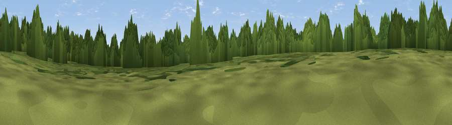

Ten Rides
#43144 in England · top 88% of its area beats it · near SappertonThe view, rendered

A 360° render of this exact spot computed from the terrain model, tree cover and land cover — summer colours, afternoon light, calibrated against photographs of famous viewpoints. Real trees, hedges and buildings will differ in detail.
The panorama
Grey silhouette: terrain skyline in each direction (720 bearings, Earth curvature and refraction included). Dashed green: skyline with trees (+15 m) and buildings (+8 m) as obstacles. Blue strip: how far the ground is visible on each bearing.
Where the view opens
Wedge length = distance to the farthest visible ground on that bearing (vegetation-aware). Rings at 10, 25 and 50 km.
What fills the view
67% woodland · 20% cropland · 12% grassland ·
Angular shares of the visible panorama (visual magnitude), not map area. Landscape diversity 0.39 (0–1 Shannon).
Key numbers
More beautiful places nearby
The staircase of upgrades: each row has a higher view potential than everything closer. Driving times are estimates from straight-line distance, calibrated against real road routing — check an actual route before setting out.
| Place | Direction | Drive | Score |
|---|---|---|---|
| Sapperton Hill | WNW · 2 km | ~4 min | 45.2 |
| Viewpoint near Whiteway | NW · 8 km | ~16 min | 50.0 |
| Viewpoint near Slad | WNW · 9 km | ~18 min | 55.8 |
| Pen Hill | NNE · 10 km | ~20 min | 66.4 |
| Birdlip Hill | NNW · 12 km | ~23 min | 71.7 |
| Painswick Beacon | NW · 14 km | ~25 min | 79.6 |
| Viewpoint near Great Witcombe | NNW · 14 km | ~25 min | 80.5 |
| Nottingham Hill | N · 26 km | ~42 min | 80.9 |
51.72275, -2.04916 · source: osm viewpoint · position refined by local search. Computed location — check access rights before visiting.